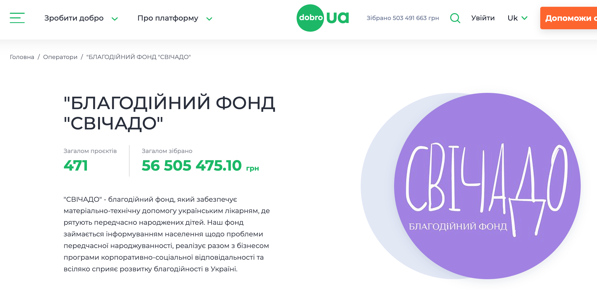
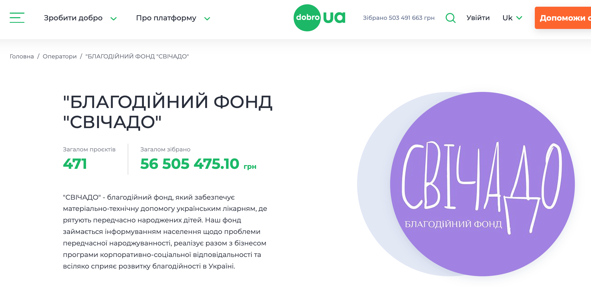

All 100% of the collected funds are spent on the implementation
of charity projects and the purchase
of equipment for Ukrainian hospitals!
You can donate for any project of our fund
using a bank card direct transfer, transfer to bank account, or
by supporting one of the fund's projects on the Dobro.UA platform 🙏
You can download annual reports You can download the annual reports of our fund here 👇
 
